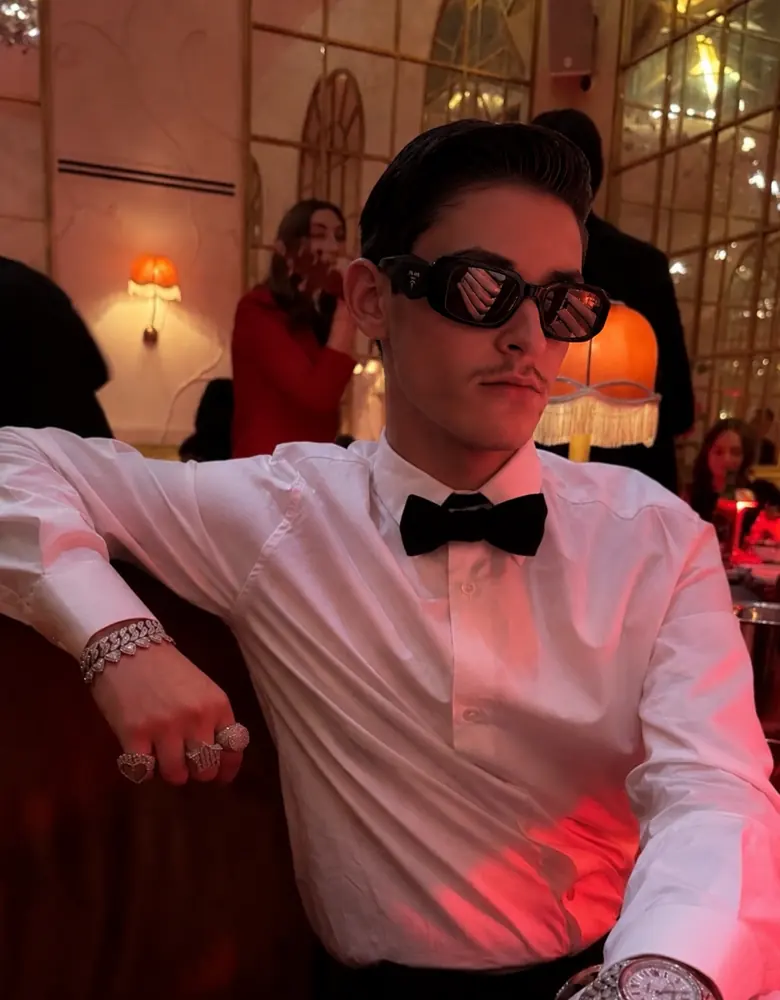

Luke Cline
I taught myself to build, failed in public, and kept going until it held.

How I got here
Age seventeen
At seventeen, seated in a classroom, I asked a plain question: why am I here? I had no plan yet, only the conviction that I would not hand my future to someone else. I set aside the pursuit of grades and turned to the pursuit of building.
The early ventures, 2024
Insightful AI came first, an emotional intelligence platform that matured into a working product, a private beta and a formal sale process. Palm AI, Oracle Trader and MoodTrack+ followed. Each was a serious education. None earned revenue.
Thirteen apps in four months, 2025
From January to April I shipped thirteen applications with AI tools. None earned a dollar. What I gained was a lasting distinction between a working demonstration and a finished product.
The first income
A skincare store of my own, Mason Lumière, produced no sales. Founder OS, a coaching and systems service, then won three paying clients and roughly $600. I spent it on my first MacBook, the machine everything since has been built on.
The craft
I stopped prompting and learned engineering properly: code, databases, deployment, security. Beyond Norme was the result. Its dashboards displayed simulated volume, and I have always said so plainly: real revenue was zero. The skill, however, was entirely real.
Phielia, 2026
A single feature inside that platform revealed itself as the company. It became Phielia, real time guidance for live enterprise conversations, beginning with telecom. It is pre revenue and led by a small founding team, and I will always state exactly where it stands.
I did not need permission to become what I wanted to become.


Who shaped my standard
Music is how I work
Music runs beneath everything I build. Cris MJ is the artist I return to most, and his culture is one I love deeply. My three favorites, then the rest of the catalog.
The catalog
Albums
Cris MJ


 Insightful AI
Insightful AI